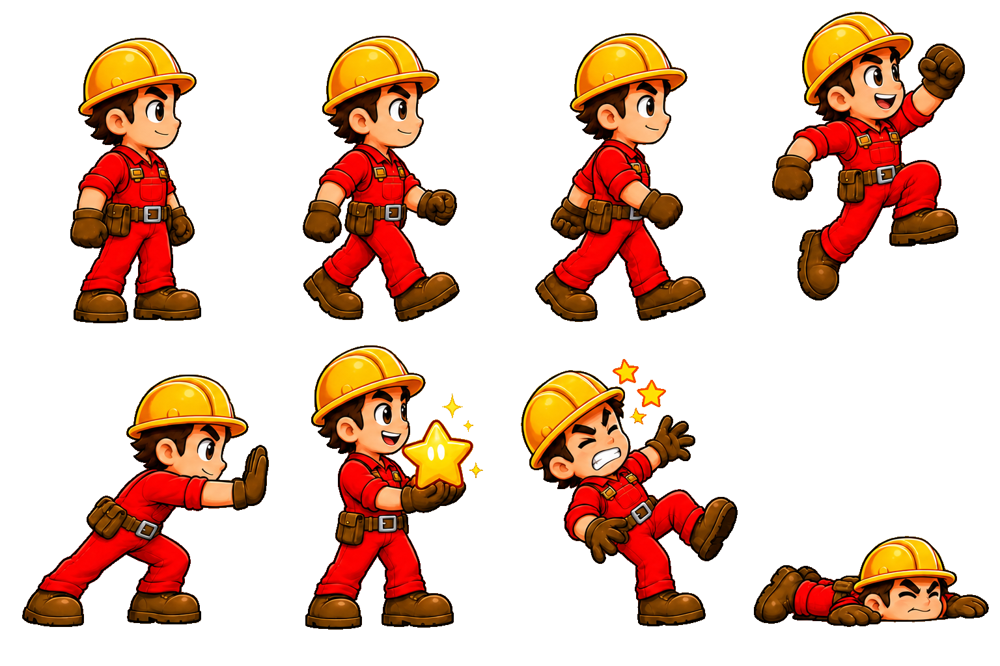
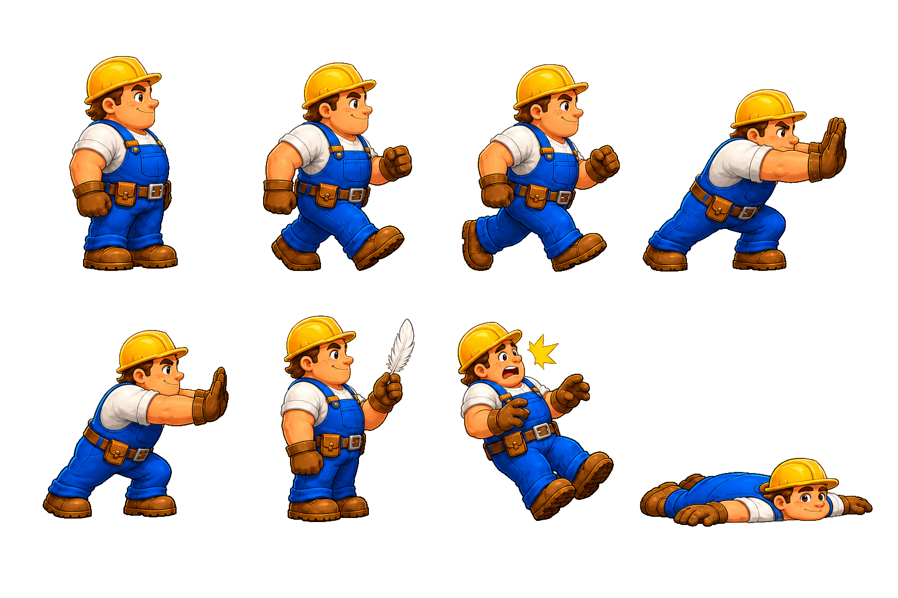
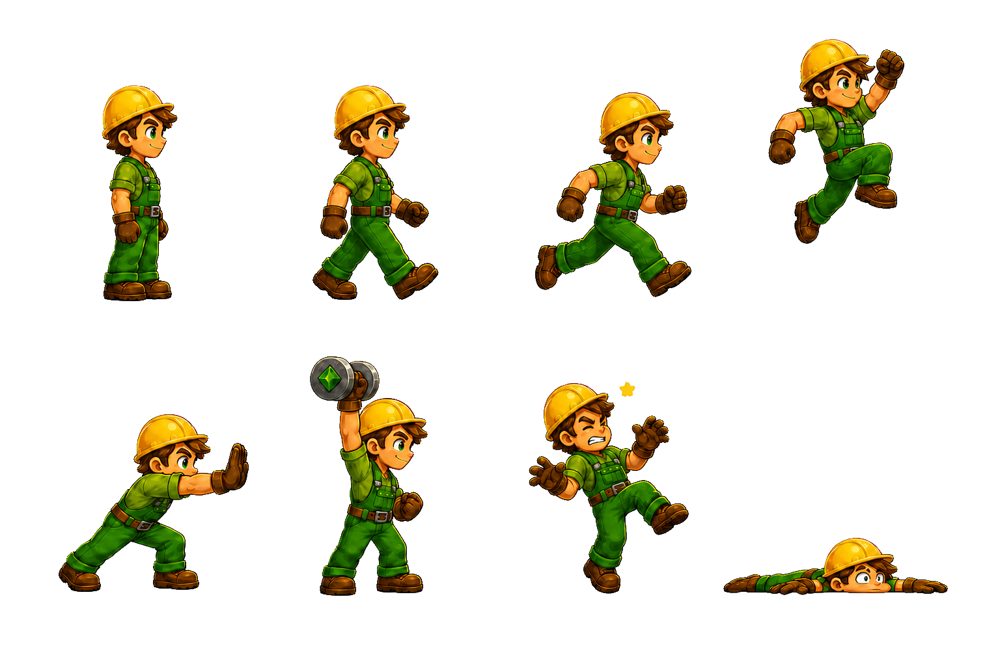

Здесь собраны все спрайты игры. Оригинальная пиксельная графика — для понимания исходника. Современная перерисовка — то, что уже готово. Группы грузчиков требуют новой прорисовки, поэтому они показаны на шахматном фоне с референсами желаемого стиля.
Архивы формируются в браузере. Может занять несколько секунд.
Ниже показаны три группы кадров: оригинал, текущая перерисовка и желаемый стиль. Фон — шахматная доска для контроля прозрачности.
Проблемы текущей перерисовки: не подходит по стилю, ИИ не угадал с позами, со всех сторон свободные края при формальном соблюдении размера.
Например, если в оригинале у спрайта в позе "толкаю блок" руки прислонены к краю изображения, то и у перерисовки в позе "толкаю блок" руки должны прилегать к краю изображения. Перерисовка в колонке "Текущий новый" не смогла ни то, ни другое.
В колонке "Референс" приведены примеры, в которых стиль плюс-минус нормальный, но под размеры 80x160 они толком не рассчитаны.


